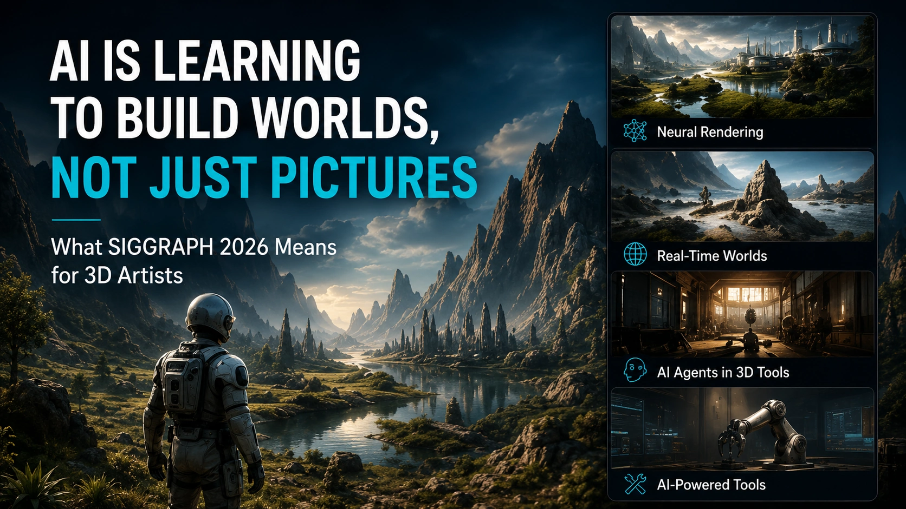

Image generators create pictures that look like worlds.
World models are trying to create places that behave like worlds.
That difference may become one of the most important shifts in AI, computer graphics, games, filmmaking and robotics.
At SIGGRAPH 2026, NVIDIA presented advances in world models, neural rendering, real-time simulation and AI agents connected to 3D tools.
The demonstrations point toward a future where AI does not only generate the appearance of an environment.
It begins to understand space, objects, movement, materials and cause-and-effect inside that environment.
That is a much larger idea than making a prettier image.
A picture does not contain a complete world
A generated image may show a convincing city, forest or room.
Move the camera, and the illusion begins to run out of information.
The unseen side of a building may not exist. The room may have no consistent floor plan. Objects may change shape between angles. A character may interact with something in a way that ignores weight, balance or collision.
The image is a visual answer.
It is not necessarily a simulation.
A world model aims to represent more of the underlying environment.
It may track:
- Three-dimensional space - Object location - Motion - Time - Physical relationships - Cause and effect - Camera movement - Interaction - Environmental change
That makes it useful for much more than rendering one frame.

Why physics changes the conversation
A world that looks believable is useful for an image.
A world that behaves believably is necessary for interaction.
If a robot needs to learn how to pick up an object, the object needs weight, collision and a predictable response.
If a game character walks across snow, the surface may need to deform.
If water hits a structure, it needs to flow around it rather than becoming a decorative animated texture.
NVIDIA’s SIGGRAPH 2026 work included research and demonstrations involving materials such as snow, sand and liquids, as well as controllable character motion and simulation-ready environments.
Physics makes the world responsive.
It changes generative AI from “show me what this might look like” toward “show me what happens when I do this.”
Neural rendering connects learned systems with graphics
Traditional rendering calculates an image from geometry, materials, lights and cameras.
Neural rendering uses learned systems to assist or replace parts of that process.
The two approaches are increasingly being combined.
A neural system may reconstruct a scene, predict missing information, accelerate a difficult rendering task or create detail that would otherwise require more manual work.
The traditional graphics pipeline still provides structure and control.
AI provides inference and speed.
For artists, the interesting result may not be an entirely AI-generated world or an entirely handcrafted world.
It may be a hybrid.
An artist defines the important shapes, materials, rules and visual direction. AI helps fill gaps, generate variations, reconstruct environments or accelerate expensive calculations.
World models could change preproduction
Filmmakers and game developers spend enormous time building enough of a world to test an idea.
A world model could make early exploration more interactive.
Instead of generating a single concept image, a creator might:
- Move through the environment - Change the weather - Test camera positions - Block character movement - Rearrange architecture - Explore alternate lighting - Simulate materials - Preview action - Generate coverage from several angles
That does not mean the generated world immediately becomes final production content.
It could become a much richer form of previsualization.
A director could explore the scene instead of interpreting a static board.
A game designer could test the feeling of a space before the complete level is built.
A 3D artist could begin with something spatially coherent instead of reverse-engineering one attractive image.
AI agents are entering 3D software
NVIDIA also presented work connecting AI agents to existing 3D and simulation tools.
Its expanded Agent Toolkit includes Omniverse libraries and a sample “SimReady” Blender workflow.
The idea is not merely to ask an assistant how to use Blender.
The agent can be given tools that allow it to operate within a structured workflow, help prepare simulation-ready assets and perform tasks while keeping the creator in control.
An agent connected to 3D software could eventually assist with:
- Scene organization - Asset preparation - Material setup - Validation - Simulation configuration - Repetitive cleanup - Camera generation - Lighting variations - Export preparation - Testing
The useful version of this technology is not an agent randomly pressing buttons faster than a person.
It is an agent working within rules, showing its decisions and handling tasks the artist does not need to perform manually for the hundredth time.
What this means for 3D artists
The immediate reaction to AI world-building is often that it will replace environment artists.
That conclusion skips several difficult parts.
A usable world still needs:
- Art direction - Composition - Consistent scale - Believable design - Material logic - Performance - Optimization - Narrative purpose - Technical constraints - Final quality control
Generating more world does not automatically create a better world.
In fact, the easier it becomes to create enormous environments, the more important it becomes to decide what deserves to exist.
Artists may spend less time manually constructing every background element and more time directing systems, correcting results, defining rules and refining the areas that matter most.
The craft changes.
It does not disappear.
Games may feel less scripted
Most game worlds are carefully prepared collections of possible interactions.
Characters follow systems created in advance. Objects respond according to programmed rules. Environments contain the content developers were able to build and test.
World models could eventually support environments that respond more flexibly.
A player might interact with objects in ways that were not individually scripted. Characters might respond to changing context. Physical environments might behave differently each time.
That creates exciting possibilities.
It also creates testing nightmares wandering around freely with a clipboard.
A dynamic world must still be stable enough to play, safe enough to release and consistent enough to support the intended experience.
The technology will need boundaries, not only imagination.
Robotics may be the practical driver
World models are especially important for robotics and autonomous systems.
Training a robot in the physical world is expensive, slow and sometimes dangerous.
A simulation-ready world can provide many controlled situations before the machine operates around real people and objects.
The closer the simulation comes to real physics, sensors and materials, the more useful that training becomes.
This is one reason NVIDIA’s work connects creative tools, simulation and physical AI.
The same environment technology that helps a filmmaker block a scene may also help a robot learn how to move through a warehouse.
That overlap between entertainment and robotics is one of the stranger and more fascinating parts of modern computer graphics.
The danger is mistaking scale for creativity
World-generation systems may soon create more terrain, buildings, objects and variations than any team could produce manually.
That does not solve the creative problem.
A huge world can still be empty.
A realistic simulation can still be boring.
A technically impressive environment can still lack identity.
The creator’s job becomes deciding:
- What is the world about? - What makes it recognizable? - Where should attention go? - What rules shape the experience? - What should remain consistent? - What should be removed?
Abundance creates a new bottleneck.
Taste.
We are moving from generated media to generated systems
The first wave of generative AI focused heavily on outputs:
- An image - A song - A paragraph - A video clip
World models move toward systems that can continue producing responses as someone interacts with them.
That is a deeper form of generation.
The result is not only content.
It is a space of possibilities.
For artists, filmmakers and game developers, that could become one of the most powerful creative tools ever built.
It could also become one of the easiest ways to generate miles of polished nonsense.
The quality will depend on how much control creators retain and how clearly the systems expose their structure.
My practical takeaway
AI is not suddenly building complete production worlds without artists.
It is learning pieces of what a world requires.
Space.
Time.
Objects.
Physics.
Interaction.
Consistency.
SIGGRAPH 2026 showed those pieces beginning to connect through neural rendering, world models, simulation and AI agents inside familiar 3D pipelines.
The near-term opportunity is probably not pressing one button and receiving a finished universe.
It is using these systems to explore faster, simulate more accurately and remove repetitive production work.
The long-term possibility is far larger.
AI may eventually create environments that can be entered, changed and experienced rather than merely viewed.
At that point, we will no longer be asking whether an image looks real.
We will be asking whether the world behind it behaves like one.
More articles about 3D, AI and the future of creativity are available on the [JasonArts blog](https://www.jasonarts.com/blog).
Sources
NVIDIA — SIGGRAPH 2026 News: https://blogs.nvidia.com/blog/siggraph-news-2026/
NVIDIA — Agent Toolkit and Omniverse Libraries: https://nvidianews.nvidia.com/news/nvidia-agent-toolkit-expands-with-new-omniverse-libraries-putting-ai-agents-to-work-building-simulation-ready-worlds
NVIDIA at SIGGRAPH 2026: https://www.nvidia.com/en-us/events/siggraph/
SIGGRAPH 2026: https://s2026.siggraph.org/